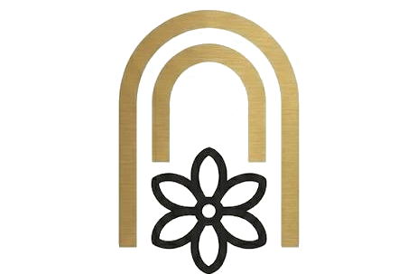
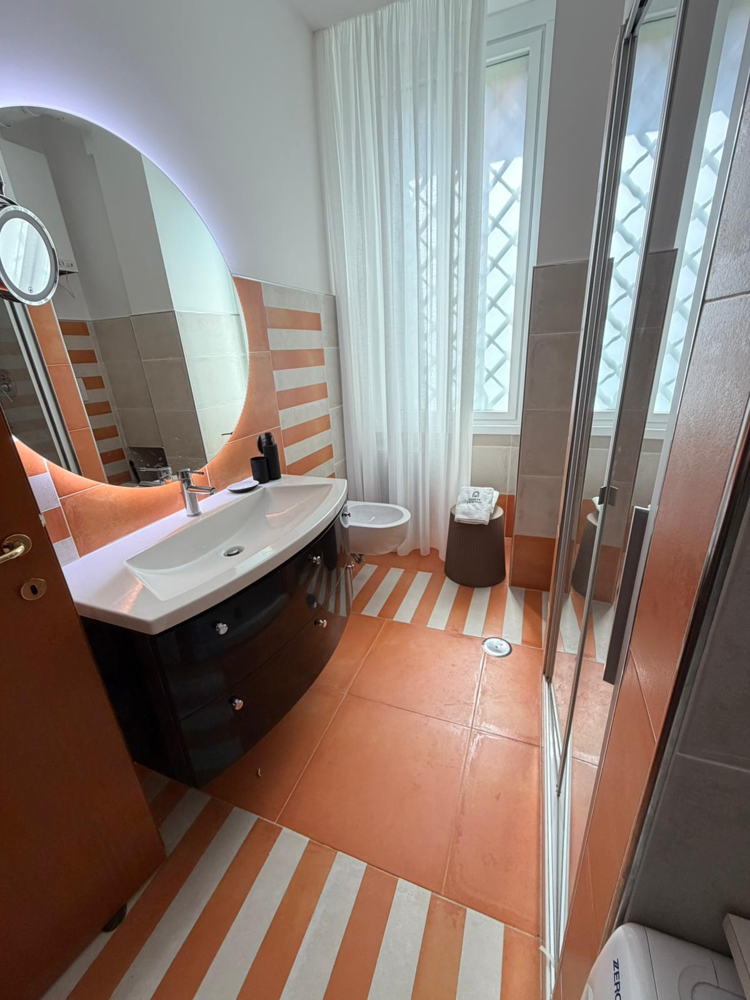
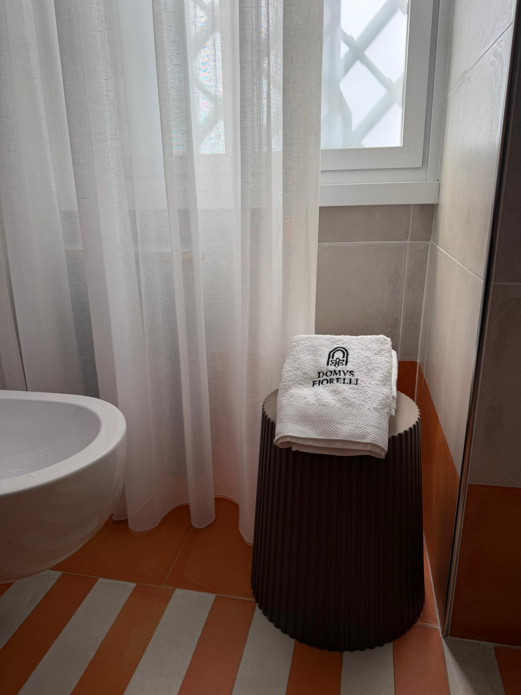
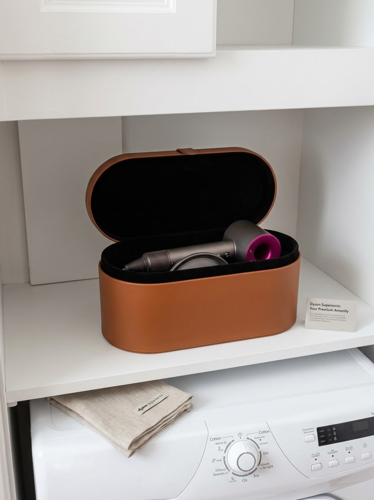

Piazza di Villa Fiorelli · Roma
Domus Fiorelli
Una casa romana curata nei dettagli, nel cuore di Villa Fiorelli.
Un appartamento curato nei minimi dettagli, tra comfort e design, pensato per soggiorni fino a 4 ospiti.

Domus Fiorelli
Una casa romana curata nei dettagli, nel cuore di Villa Fiorelli.
Un appartamento curato nei minimi dettagli, tra comfort e design, pensato per soggiorni fino a 4 ospiti.

Affacciata sul verde di un giardino condominiale, con palme secolari, Domus Fiorelli regala una rara sensazione di tranquillità nel cuore di Roma.


Un piccolo gioco di parole diventato il simbolo di Domus Fiorelli. Perché Roma non è soltanto una città da visitare: è una città da vivere, ricordare e amare.
Alessandro ti accoglie personalmente a Domus Fiorelli e sarà il tuo punto di riferimento per il check-in e durante il soggiorno.







Dal caffè del mattino alla ricarica del telefono, dalla cucina agli spazi per lavorare: abbiamo cercato di pensare anche a ciò che potresti non ricordarti di chiedere.
Anche quando Roma può aspettare — Wi-Fi, una postazione dedicata e piccoli dettagli pensati anche per chi ha bisogno di lavorare durante il soggiorno.
Vivi Roma durante il giorno. Torna alla tranquillità di un vero quartiere romano la sera.
Domus Fiorelli si trova in Piazza di Villa Fiorelli, nel quartiere Appio Latino — una zona autentica e residenziale di Roma, con palazzi del primo Novecento, mercati rionali, piccoli negozi, bar e ristoranti di quartiere. Da qui il centro storico è facilmente raggiungibile.
Non abbiamo bisogno di raccontarti che Domus Fiorelli è speciale: sono i nostri ospiti a farlo, ricordando l'accoglienza di Alessandro — che ti accoglie sempre di persona — e la quiete di un vero quartiere romano.
"I cannot even put into words how satisfied we were with our stay. We spent four nights here and it was perfect."
"Domus Fiorelli is ideally located: tram line 16 right outside, Tuscolana station and two metro lines nearby."
"From the moment of booking we had excellent contact with the host. He was extremely helpful, replied quickly to messages and took care of us even before we arrived."
"An excellent apartment, equipped with every comfort in terms of appliances."
"The apartment is cozy, clean and comfortable — everything you need for a good stay is there."
"The apartment is newly renovated, beautifully furnished and very well equipped with appliances."
Abbiamo creato una guida digitale per accompagnarti durante il soggiorno: dalla casa alle piccole esperienze da vivere nel quartiere, fino ai nostri consigli per scoprire Roma.
Scrivici per conoscere disponibilità, tariffe e condizioni dedicate.